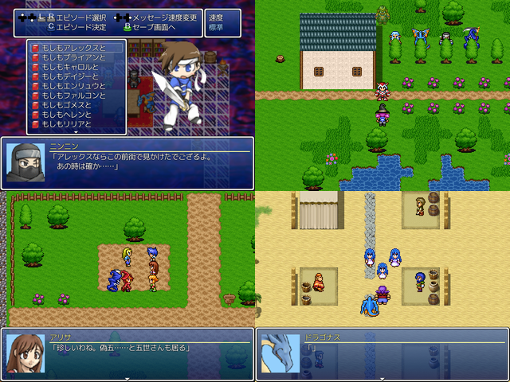

 |
|
| 作者：風見ケイ＆ひしお | |
| ツクール：VXAce | |
| ジャンル：見るゲ短編集 | |
| 配信/投稿：可/可 | |
| keyword：魔王軍四天王 | |
| 投票：投票はこちら | |
| 作者コメント： 魔王軍主催、ポテチ王国主賓のパーティが開かれようとしている中、 四天王がアレックスらポテチ王国メンバーの話で盛り上がる… という内容の見るゲです。 メンバー1人1人に独立したエピソードを割り当てた短編集ですので、 お好きな順番でご覧ください。 VXAceで制作していますが、雰囲気は2000のそれに近くなっていると思います。 | |
| 管理人コメント： VXAce製にも関わらず2000のマップチップが使われている点にすごいこだわりを感じます。 |
|
| 更新履歴：01/04本体更新 | |
| ダウンロード / 感想掲示板 | |
| 前の作品 / 次の作品 / TOPへ戻る | |